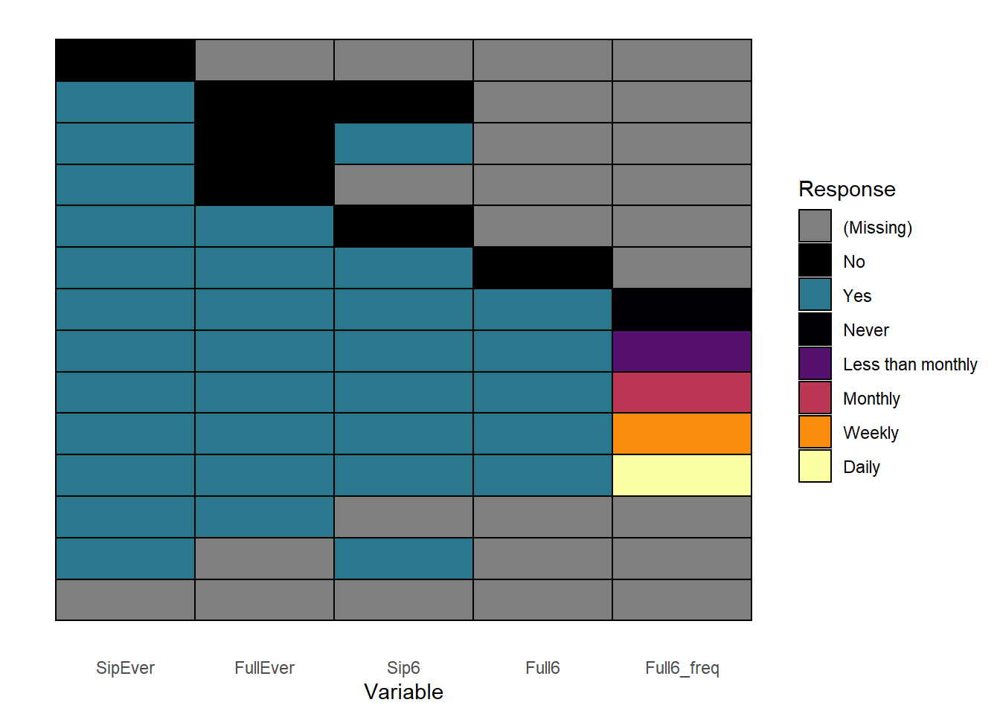
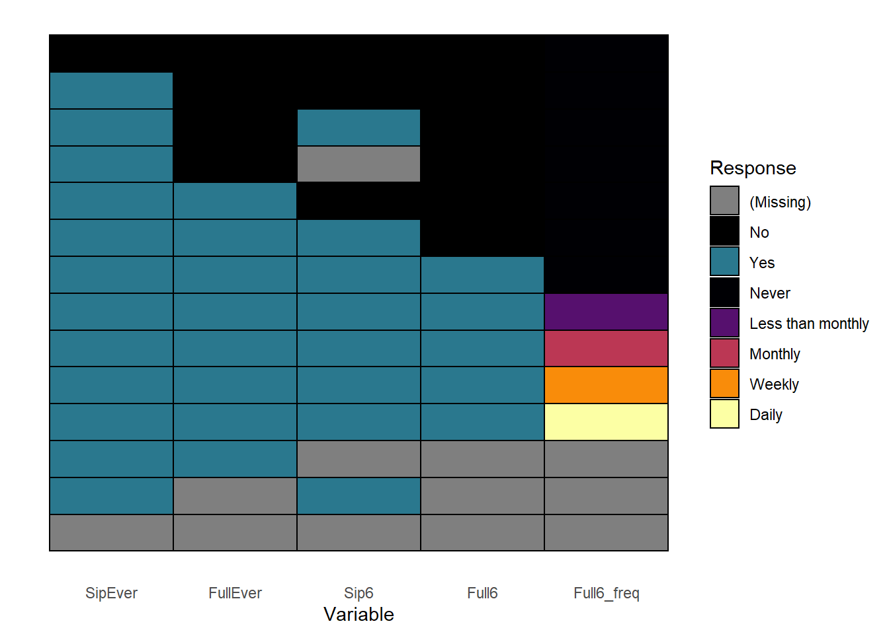
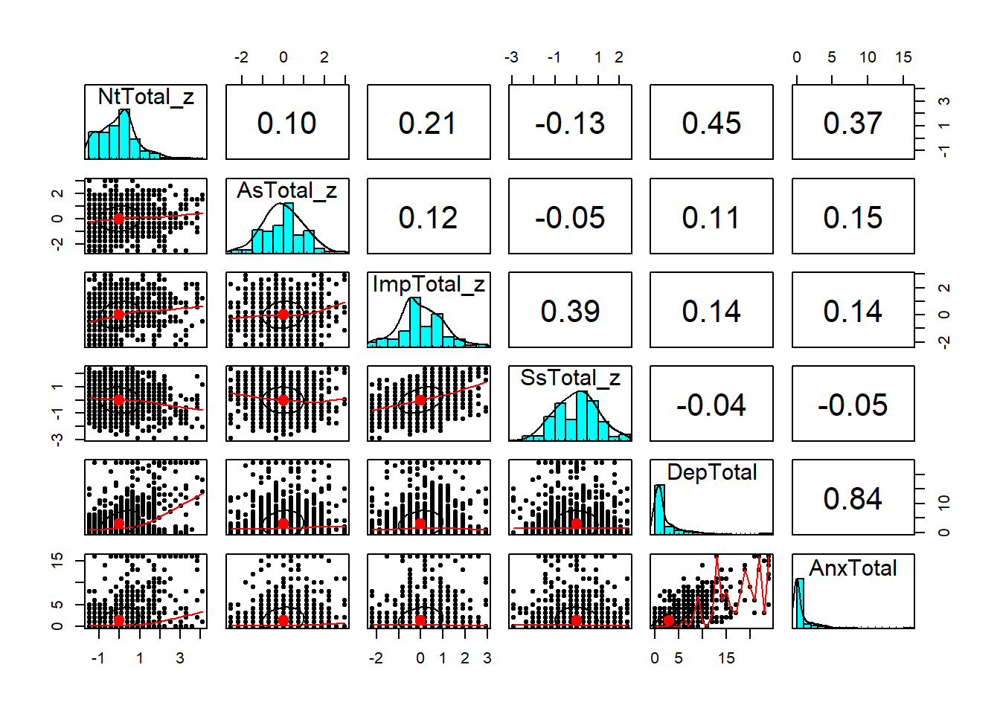
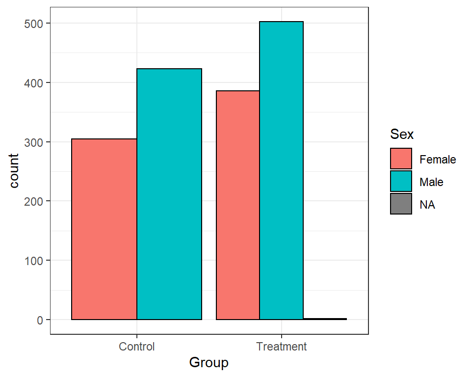
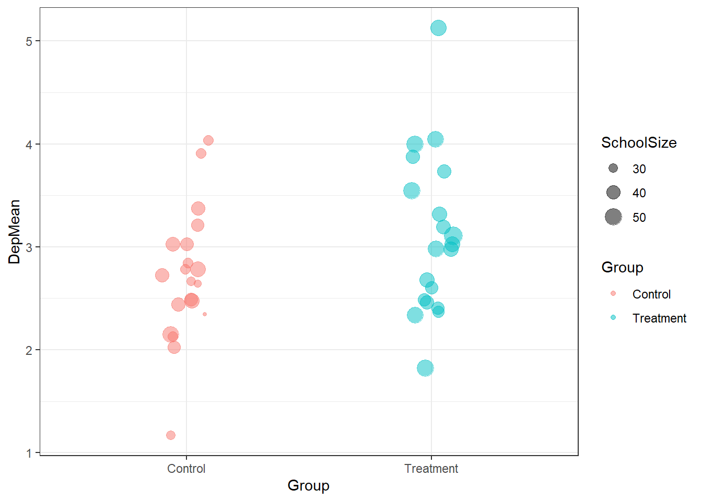
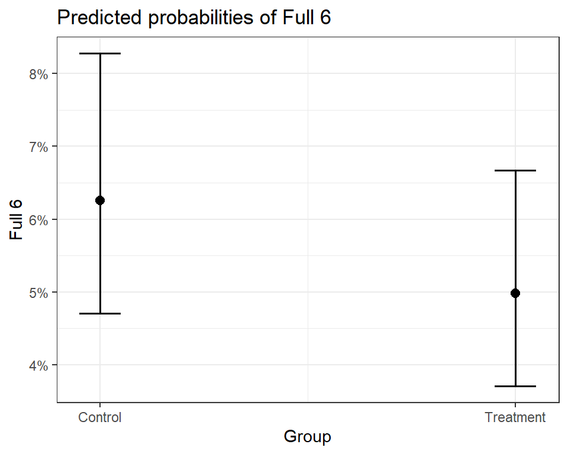

Section 9 Real world data example
In this example, we’ll use some data derived from a real study to get some experience dealing with messy raw data.3
Before we start, we’ll install some packages:
install.packages(c("readxl", "lme4"))9.1 Data overview
This data contains the post-treatment observations from a cluster-randomised trial comparing a novel treatment to control. Schools were randomised to different groups, so every participant in the same school received the same intervention. It contains:
- SURPS scores, a scale assessing different personality traits associated with substance use.
- The anxiety and depression subscales of the Brief Symptom Inventory
- Questions about alcohol use
The scales haven’t been scored, so our first step will be scoring them, before we move onto describing and analysing the data.
Checking what you’ve just done is very useful after any change you make to the data. Throughout this example, I’ll include notes on how you could check the previous step. Try to code those checks yourself!
9.2 Basic setup
9.2.1 Load libraries
As always, the first step is loading the libraries we’ll use in this analysis:
library(tidyverse)
library(psych)
library(sjPlot)
library(readxl)
library(lme4)
# We'll also set a default theme for our
# ggplot plots
theme_set(theme_bw())9.2.2 Load the data
The example data is available online - to download it you can use:
download.file("https://gitlab.com/warsquid/rad/raw/master/data/CapSimulatedData.xlsx",
destfile = "CapSimulatedData.xlsx",
mode = "wb")(if that doesn’t work, please manually download the file here and copy it to your project directory)
Now we can load the data in:
real = readxl::read_excel("CapSimulatedData.xlsx")
head(real)## # A tibble: 6 x 43
## PersonId SchoolId Sex Group Surps1 Surps2 Surps3 Surps4 Surps5 Surps6 Surps7 Surps8 Surps9 Surps10 Surps11 Surps12
## <dbl> <dbl> <chr> <chr> <dbl> <dbl> <dbl> <dbl> <dbl> <dbl> <dbl> <dbl> <dbl> <dbl> <dbl> <dbl>
## 1 1 2 Male Control 3 1 1 2 2 2 2 2 1 1 1 1
## 2 2 7 Female Control NA NA NA NA NA NA NA NA NA NA NA NA
## 3 3 2 Male Treatm~ 2 1 3 2 0 3 2 2 2 3 2 1
## 4 4 1 Male Control NA NA NA NA NA NA NA NA NA NA NA NA
## 5 5 6 Male Control 3 1 2 2 1 2 2 1 2 1 1 2
## 6 6 14 Male Treatm~ 3 1 2 3 0 3 3 0 2 0 1 1
## # ... with 27 more variables: Surps13 <dbl>, Surps14 <dbl>, Surps15 <dbl>, Surps16 <dbl>, Surps17 <dbl>, Surps18 <dbl>,
## # Surps19 <dbl>, Surps20 <dbl>, Surps21 <dbl>, Surps22 <dbl>, Surps23 <dbl>, Bsi1 <dbl>, Bsi2 <dbl>, Bsi3 <dbl>,
## # Bsi4 <dbl>, Bsi5 <dbl>, Bsi6 <dbl>, Bsi7 <dbl>, Bsi8 <dbl>, Bsi9 <dbl>, Bsi10 <dbl>, SipEver <dbl>, FullEver <dbl>,
## # Sip6 <dbl>, Full6 <dbl>, Full6_freq <dbl>, PresentPost <dbl>A good first step is to use str() to inspect the data types:
str(real)And check some basic features of the data like the number of people in each intervention group (and maybe school?).
table(real$Group)##
## Control Treatment
## 1001 1189table(real$SchoolId)##
## 1 2 3 4 5 6 7 8 9 10 11 12 13 14 15 16 17 18 19 20
## 112 114 113 88 126 93 118 125 106 96 108 115 105 96 116 115 108 110 105 1219.2.3 Solve major issues
One major issue with this data is that not everyone completed the post-treatment assessment, and they have missing data for all the questions. In an in-depth analysis we might try to handle this missing data in a more sophisticated way, but for now there’s not much we can do with it, so we’ll drop it up front:
# Same as:
# real = real[real$PresentPost == 1, ]
real = filter(real, PresentPost == 1)This is a contrived example, but if you can do something to simplify your data like this, it’s best to do it up front, before getting into the details of data cleaning and analysis.
9.3 Recoding and scoring
9.3.1 Scoring SURPS the easy way
Sometimes there are existing functions in R or in packages that people have written that do exactly what we want with minimal effort.
The psych::scoreItems() function is designed for scoring psychometric
scales, and it has options to allow a few common tweaks to the scoring
process, so it will often score things exactly how you want them.
The most useful feature of scoreItems() is it allows you to specify the questions
that make up each subscale by providing a list: each element
of the list is a character vector specifying which questions
are in that subscale. You can put a - in front of a question
if that question should be reverse scored.
So a simple scale with two subscales might look like:
scoring_key = list(
Extraversion = c("Q1", "-Q2", "Q3"),
Introversion = c("-Q4", "-Q5", "Q6")
)The SURPS questionnaire has four subscales, and we can score them all at once using:
surps_keys = list(
Nt = c("-Surps1", "-Surps4", "-Surps7", "-Surps13",
"Surps17", "-Surps20", "-Surps23"),
As = c("Surps8", "Surps10", "Surps14", "Surps18",
"Surps21"),
Imp = c("Surps2", "Surps5", "Surps11", "Surps15",
"Surps22"),
Ss = c("Surps3", "Surps6", "Surps9", "Surps12",
"Surps16", "Surps19")
)
surps_scored = psych::scoreItems(
keys = surps_keys,
items = real,
totals = TRUE,
impute = "median")We have the scores now, but we haven’t added them to our main dataset yet.
We can look at the object that scoreItems() has given us:
surps_scoredThis is a lot of information, and right now we’re only interested in the scores, so we need to check how to access them.
Looking at the help page ?scoreItems under the Value section tells us the
actual scores are stored at surps_scored$scores. We can add all 4 columns into
our dataset at once with:
real[, c("NtTotal", "AsTotal", "ImpTotal", "SsTotal")] = surps_scored$scores
head(real[, c("NtTotal", "AsTotal", "ImpTotal", "SsTotal")])## # A tibble: 6 x 4
## NtTotal AsTotal ImpTotal SsTotal
## <dbl> <dbl> <dbl> <dbl>
## 1 7 6 7 7
## 2 6 11 5 12
## 3 6 6 5 11
## 4 0 3 2 11
## 5 8 8 5 12
## 6 6 1 9 12
Sometimes you don’t need all the extra info that psych::scoreItems() provides. psych::scoreFast() will do the same calculations but just return the final scores.
9.3.2 Scoring SURPS the harder way
Functions like scoreItems() won’t always do exactly what we want.
When we scored the scales above, we let scoreItems() impute any missing
values using that item’s median score. However, if we have our own missing
data procedure that doesn’t match what scoreItems() does, we might have
to do some of the work ourselves.
One scoring procedure I’ve used in the past is:
- Calculate the scale total for participants who answer all questions
- Participants that answer fewer than 80% of a scale’s items get a missing value
- Participants that answer more than 80% of items get their scores “expanded” to match the full range based on all items.
Some basic math tells us that for those participants who answer >=80% of items, we can calculate the mean of the items they did answer and multiply by the total number of items.
To implement our custom procedure, we can do:
surps_manual = psych::scoreItems(
keys = surps_keys,
items = real,
totals = FALSE, # Calculate the mean score
impute = "none")
real$NtManual = surps_manual$scores[, "Nt"] * length(surps_keys[["Nt"]])
# Set missing when less than 80% of items scored
real$NtManual[surps_manual$missing[, "Nt"] > 1] = NA
real$AsManual = surps_manual$scores[, "As"] * length(surps_keys[["As"]])
real$AsManual[surps_manual$missing[, "As"] > 1] = NA
real$ImpManual = surps_manual$scores[, "Imp"] * length(surps_keys[["Imp"]])
real$ImpManual[surps_manual$missing[, "Imp"] > 1] = NA
real$SsManual = surps_manual$scores[, "Ss"] * length(surps_keys[["Ss"]])
real$SsManual[surps_manual$missing[, "Ss"] > 1] = NANote how we can use R to calculate some of the numbers involved automatically,
like using length(surps_keys[["Nt"]]) instead of typing the actual number.
Reusing information that we’ve already stored can save us from dumb mistakes,
since as long as we check that surps_keys has the right items, every piece
of code that uses it should also have the right information.
How can we figure out the maximum number of missing items for each scale? R can help us with that too:
sapply(surps_keys, function(items) {
# ceiling() rounds up
min_items = ceiling(0.8 * length(items))
max_missing = length(items) - min_items
return(max_missing)
})## Nt As Imp Ss
## 1 1 1 1As you get more comfortable with R, you can start using it not just to manage your data, but to do some of the extra tasks and calculations that pop up in the process.
A simple way to check the scoring would be to look at all the items from one of the subscales along with the total score - calculate a couple of scores manually and see if they match.
9.3.3 Scoring the BSI scales
We can score the BSI scales the same way. We just want the total
for each subscale, and we’ll assume psych’s median imputation
is OK:
bsi_keys = list(
# Using 'paste0' to create the column names for us
Dep = paste0("Bsi", 1:6),
Anx = paste0("Bsi", 7:10)
)
bsi_scored = psych::scoreItems(
keys = bsi_keys,
items = real,
totals = TRUE,
impute = "median")
real[, c("DepTotal", "AnxTotal")] = bsi_scored$scores
head(real[, c("DepTotal", "AnxTotal")])## # A tibble: 6 x 2
## DepTotal AnxTotal
## <dbl> <dbl>
## 1 4 4
## 2 1 0
## 3 0 0
## 4 0 0
## 5 1 0
## 6 1 19.3.4 Recoding
9.3.4.1 Recoding categories
All the basic recoding tools you’d expect are available in R. The most basic tool is converting numeric codes for categorical variables into nicely labelled factors:
real$SipEver = factor(
real$SipEver,
levels = c(0, 1),
labels = c("No", "Yes")
)
real$FullEver = factor(
real$FullEver,
levels = c(0, 1),
labels = c("No", "Yes")
)
real$Sip6 = factor(
real$Sip6,
levels = c(0, 1),
labels = c("No", "Yes")
)
real$Full6 = factor(
real$Full6,
levels = c(0, 1),
labels = c("No", "Yes")
)
real$Full6_freq = factor(
real$Full6_freq,
levels = c(0, 1, 2, 3, 4, 5),
labels = c("Never", "Less than monthly", "Monthly",
"1-2 times a month", "Weekly",
"Daily")
)
head(real[, c("SipEver", "FullEver", "Sip6", "Full6", "Full6_freq")])## # A tibble: 6 x 5
## SipEver FullEver Sip6 Full6 Full6_freq
## <fct> <fct> <fct> <fct> <fct>
## 1 No <NA> <NA> <NA> <NA>
## 2 No <NA> <NA> <NA> <NA>
## 3 Yes No Yes <NA> <NA>
## 4 Yes No No <NA> <NA>
## 5 Yes No <NA> <NA> <NA>
## 6 Yes No Yes <NA> <NA>Once you’ve converted the variables to factors, you can combine
and reorder categories in different ways using functions
from the forcats package (part of the tidyverse). If
we want to simplify the frequency variable so it’s just
a Yes/No variable reflecting whether the participant drinks
monthly or more often:
real$Full6_monthly = fct_collapse(
real$Full6_freq,
Monthly = c("Monthly", "1-2 times a month",
"Weekly","Daily"),
Less = c("Never", "Less than monthly")
)A good way to check this recoding would be to check the total numbers for each response for each variable.
Advanced tip: Avoid repeating yourself
In the code above we do the exact same thing repeatedly, just changing the column name each time. R has lots of great tools for applying the same steps multiple times, which become very useful as your data gets larger. The tidyverse has some particularly great tools to make this easier.
If we turn the steps for coding a yes/no variable into
a function we could apply it to all columns at once,
using mutate_at from the dplyr package:
# Does the same as the No/Yes recoding above
real = mutate_at(
real,
vars(c("SipEver", "FullEver", "Sip6", "Full6")),
function(col) {
factor(col,
levels = c(0, 1),
labels = c("No", "Yes"))
}
)Scaling/Calculating z-scores
The scale() function converts scores to z-scores by mean-centering
them and dividing them by their standard deviation. scale() returns
a matrix even when we only call it on a single vector, so we need
a bit of extra syntax to pull the values out of the matrix:
real$NtTotal_z = scale(real$NtTotal)[, 1]
real$AsTotal_z = scale(real$AsTotal)[, 1]
real$ImpTotal_z = scale(real$ImpTotal)[, 1]
real$SsTotal_z = scale(real$SsTotal)[, 1]
head(real[, c("NtTotal", "NtTotal_z", "AsTotal", "AsTotal_z")])## # A tibble: 6 x 4
## NtTotal NtTotal_z AsTotal AsTotal_z
## <dbl> <dbl> <dbl> <dbl>
## 1 7 0.374 6 -0.346
## 2 6 0.107 11 1.49
## 3 6 0.107 6 -0.346
## 4 0 -1.49 3 -1.45
## 5 8 0.640 8 0.388
## 6 6 0.107 1 -2.18The resulting variables should have means of (very close to) 0 and SDs of 1 - check them by calculating.
Advanced tip: reducing repetition
Again, we could reduce some of the repetition above using some of the advanced features of the tidyverse. We could do:
real = real %>%
mutate_at(c("NtTotal", "AsTotal", "ImpTotal", "SsTotal"),
list(z = ~ scale(.)[, 1]))Advanced tip: Scaling within groups
If we want to check peoples’ scores relative to the other participants in their school, then we can scale the scores within each school. Again, this is something that’s easiest to handle using the tidyverse:
real = real %>%
group_by(SchoolId) %>%
mutate(NtTotal_schoolz = scale(NtTotal)[, 1],
AsTotal_schoolz = scale(AsTotal)[, 1],
ImpTotal_schoolz = scale(ImpTotal)[, 1],
SsTotal_schoolz = scale(SsTotal)[, 1]) %>%
ungroup()
head(real[, c("SchoolId", "NtTotal", "NtTotal_z", "NtTotal_schoolz")])## # A tibble: 6 x 4
## SchoolId NtTotal NtTotal_z NtTotal_schoolz
## <dbl> <dbl> <dbl> <dbl>
## 1 2 7 0.374 0.380
## 2 2 6 0.107 0.129
## 3 6 6 0.107 0.157
## 4 14 0 -1.49 -1.52
## 5 11 8 0.640 0.683
## 6 13 6 0.107 0.05949.3.4.2 Recoding using logical tests
For the BSI scales, we’ll treat any score \(> 10\) as showing a possible diagnosis of depression or anxiety:
dep_diagnosis = ifelse(real$DepTotal > 10, "Present", "Absent")
real$DepDiagnosis = factor(dep_diagnosis, levels = c("Absent", "Present"))
anx_diagnosis = ifelse(real$AnxTotal > 10, "Present", "Absent")
real$AnxDiagnosis = factor(anx_diagnosis, levels = c("Absent", "Present"))For SURPS, we classify participants as high risk if they are more than 1 standard deviation above the mean on at least one subscale. First we need to express this as a logical test:
is_high_risk = (
(real$NtTotal_z > 1) |
(real$AsTotal_z > 1) |
(real$ImpTotal_z > 1) |
(real$SsTotal_z > 1)
)Then we can convert the logical vector to a factor:
real$Risk = factor(is_high_risk, levels = c(FALSE, TRUE),
labels = c("Low", "High"))
head(real[, c("NtTotal_z", "AsTotal_z", "ImpTotal_z", "SsTotal_z", "Risk")])## # A tibble: 6 x 5
## NtTotal_z AsTotal_z ImpTotal_z SsTotal_z Risk
## <dbl> <dbl> <dbl> <dbl> <fct>
## 1 0.374 -0.346 0.195 -0.863 Low
## 2 0.107 1.49 -0.488 0.604 High
## 3 0.107 -0.346 -0.488 0.310 Low
## 4 -1.49 -1.45 -1.51 0.310 Low
## 5 0.640 0.388 -0.488 0.604 Low
## 6 0.107 -2.18 0.877 0.604 LowRelationships between variables: Cleaning up alcohol variables
The data here comes from an online survey, which was programmed so that questions are skipped when they’re no longer relevant. So if a participant has never had a sip of alcohol, any questions about having a full drink of alcohol are skipped because we can assume the answer is no.
You can see this logic in the plot below, which shows patterns of responses:

To get the same kind of overview in table form, you can also use count():
count(real, SipEver, FullEver, Sip6, Full6, Full6_freq)## # A tibble: 14 x 6
## SipEver FullEver Sip6 Full6 Full6_freq n
## <fct> <fct> <fct> <fct> <fct> <int>
## 1 No <NA> <NA> <NA> <NA> 523
## 2 Yes No No <NA> <NA> 394
## 3 Yes No Yes <NA> <NA> 376
## 4 Yes No <NA> <NA> <NA> 16
## 5 Yes Yes No <NA> <NA> 155
## 6 Yes Yes Yes No <NA> 11
## 7 Yes Yes Yes Yes Never 63
## 8 Yes Yes Yes Yes Less than monthly 11
## 9 Yes Yes Yes Yes Monthly 10
## 10 Yes Yes Yes Yes Weekly 1
## 11 Yes Yes Yes Yes Daily 2
## 12 Yes Yes <NA> <NA> <NA> 4
## 13 Yes <NA> Yes <NA> <NA> 2
## 14 <NA> <NA> <NA> <NA> <NA> 50To analyse the data properly, we’ll need to fill in the “No” responses that can be assumed (because of the logic of the survey), instead of leaving them missing.
There’s no real trick to this, the hard part is getting a clear picture of what needs to be done like we did above. As long as we fill in the variables in order, we should get the right results:
# If they've never sipped, they've never had a full drink
# and haven't sipped in the past 6 months
real$FullEver[real$SipEver == "No"] = "No"
real$Sip6[real$SipEver == "No"] = "No"
# If they haven't had a full drink ever, they haven't
# had one in the past 6 months
real$Full6[real$FullEver == "No"] = "No"
# If they haven't had a sip recently, they haven't
# had a full drink
real$Full6[real$Sip6 == "No"] = "No"
# If they haven't had a full drink, their frequency
# of drinking is zero
real$Full6_freq[real$Full6 == "No"] = "Never"If we look at the pattern of responses again we should see that all the relevant responses have now bene filled in. Where missing values remain, it’s because we can’t automatically assume a response:

9.4 Saving data
Now that the data has been recoded and cleaned, we can save it. R can output to lots of different formats, so you can choose whichever format works best for you.
However, if you want to keep working in R, it’s best to save it in a format that preserves all the info about your data, including the order of categories in your factors. SPSS and Stata formats will do this, while Excel won’t. For now, we’ll use R’s own .rds format, which preserves all that information:
readr::write_rds(real, "CapData-Recoded.rds")9.5 Descriptive statistics
Once our data has been recoded and cleaned, we can start looking at descriptive statistics - this is always a good first step before trying any actual analysis.
9.5.1 Correlations between variables
We can get a good overview of the relationships between
different variables using a scatterplot matrix,
which shows correlations between each pair of variables.
psych has a function pairs.panel to handle this:
key_vars = c("NtTotal_z", "AsTotal_z", "ImpTotal_z",
"SsTotal_z", "DepTotal", "AnxTotal")
psych::pairs.panels(real[, key_vars])
Also check out the ggcorrplot package for a nicer-looking version of this.
If we want a traditional correlation table, we can use
psych::corr.test, which provides both the correlations
between variables and the p values for each correlation
coefficient.
psych::corr.test(real[, key_vars])## Call:psych::corr.test(x = real[, key_vars])
## Correlation matrix
## NtTotal_z AsTotal_z ImpTotal_z SsTotal_z DepTotal AnxTotal
## NtTotal_z 1.00 0.10 0.21 -0.13 0.45 0.37
## AsTotal_z 0.10 1.00 0.12 -0.05 0.11 0.15
## ImpTotal_z 0.21 0.12 1.00 0.39 0.14 0.14
## SsTotal_z -0.13 -0.05 0.39 1.00 -0.04 -0.05
## DepTotal 0.45 0.11 0.14 -0.04 1.00 0.84
## AnxTotal 0.37 0.15 0.14 -0.05 0.84 1.00
## Sample Size
## [1] 1618
## Probability values (Entries above the diagonal are adjusted for multiple tests.)
## NtTotal_z AsTotal_z ImpTotal_z SsTotal_z DepTotal AnxTotal
## NtTotal_z 0 0.00 0 0.00 0.00 0.00
## AsTotal_z 0 0.00 0 0.08 0.00 0.00
## ImpTotal_z 0 0.00 0 0.00 0.00 0.00
## SsTotal_z 0 0.03 0 0.00 0.11 0.11
## DepTotal 0 0.00 0 0.09 0.00 0.00
## AnxTotal 0 0.00 0 0.05 0.00 0.00
##
## To see confidence intervals of the correlations, print with the short=FALSE option9.5.2 Contingency tables for categorical data
To generate cross-tabs or contigency tables for categorical
variables, we can use table(), which we’ve already seen
earlier:
table(real$Group, real$Sex)##
## Female Male
## Control 305 423
## Treatment 386 502If we want to do some basic testing to see if the
proportions of males and females differ, we can use chisq.test()
chisq.test(real$Group, real$Sex)##
## Pearson's Chi-squared test with Yates' continuity correction
##
## data: real$Group and real$Sex
## X-squared = 0.34263, df = 1, p-value = 0.5583If we wanted to visualize these numbers instead,
that’s easy to achieve in ggplot:
ggplot(real, aes(x = Group, fill = Sex)) +
geom_bar(position = 'dodge', colour = 'black')
9.5.3 Understanding complex data
Before trying to do analysis, it can be useful to try to understand some of the more complex features of your data. In this study, one important feature is the cluster randomization, where participants are grouped in schools - we’ll need to account for this in our analysis so it’s worth trying to get a picture of how it looks.
We’ll try to look at the means of some variables in each
school. Complex grouped data like this is where the
tidyverse starts to be really useful, so we’ll
start making heavy use of it. We’ll start by generating
a table:
dep_tab = real %>%
group_by(Group, SchoolId) %>%
summarize(
DepMean = mean(DepTotal, na.rm = TRUE),
SchoolSize = n()
)
head(dep_tab)## # A tibble: 6 x 4
## # Groups: Group [1]
## Group SchoolId DepMean SchoolSize
## <chr> <dbl> <dbl> <int>
## 1 Control 1 3.03 39
## 2 Control 2 2.72 40
## 3 Control 3 2.48 44
## 4 Control 4 1.17 30
## 5 Control 5 2.84 32
## 6 Control 6 2.12 32Once we’ve got this information in a table, it’s
easy to create a ggplot plot to visualize it
ggplot(dep_tab, aes(x = Group, y = DepMean,
colour = Group)) +
geom_jitter(aes(size = SchoolSize), alpha= 0.5,
width = 0.1, height = 0)
You can calculate means and summaries within ggplot2, feeding in your full dataset and using functions like stat_summary(). But I’d recommend using tidyverse functions to create a simple summary table instead,as you’ll often run into things ggplot can’t do without a lot of effort.
9.6 Analysis
9.6.1 Simple but wrong: Logistic regression
We’ll start with a simple analysis, just comparing
the odds of drinking (a binary outcome) between
the groups. Since this is a binary outcome,
we’ll use logistic regression, which is available
in R through the glm() function. This isn’t quite
the right approach here, since it doesn’t account
for potential correlations between participants in
the same school.
glm() works similarly to lm(), which we saw earlier:
we spell out our model using a formula like outcome ~ predictors.
For logistic regression we also have to specify
family = binomial(link = 'logit'), since that’s the distribution
we’re using to model the binary outcomes:
simple_glm = glm(
Full6 ~ Group,
data = real,
family = binomial(link = "logit")
)
summary(simple_glm)##
## Call:
## glm(formula = Full6 ~ Group, family = binomial(link = "logit"),
## data = real)
##
## Deviance Residuals:
## Min 1Q Median 3Q Max
## -0.3595 -0.3595 -0.3197 -0.3197 2.4492
##
## Coefficients:
## Estimate Std. Error z value Pr(>|z|)
## (Intercept) -2.7066 0.1540 -17.579 <2e-16 ***
## GroupTreatment -0.2416 0.2208 -1.094 0.274
## ---
## Signif. codes: 0 '***' 0.001 '**' 0.01 '*' 0.05 '.' 0.1 ' ' 1
##
## (Dispersion parameter for binomial family taken to be 1)
##
## Null deviance: 671.54 on 1561 degrees of freedom
## Residual deviance: 670.34 on 1560 degrees of freedom
## (56 observations deleted due to missingness)
## AIC: 674.34
##
## Number of Fisher Scoring iterations: 5Better output with tab_model()
While summary() gives us lots of useful info about
the model, it’s not particularly readable or nice looking.
We’ll use tab_model() for nicer output:
tab_model(simple_glm)| Full 6 | |||
|---|---|---|---|
| Predictors | Odds Ratios | CI | p |
| (Intercept) | 0.07 | 0.05 – 0.09 | <0.001 |
| Group [Treatment] | 0.79 | 0.51 – 1.21 | 0.274 |
| Observations | 1562 | ||
| R2 Tjur | 0.001 | ||
Visualizing our model with plot_model()
It can be difficult to understand how logistic
regression relates to the actual probability
of the outcome. Thankfully plot_model() can
automatically convert the intervention
effect in the model to predicted probabilities:
plot_model(simple_glm,
type = "pred",
terms = "Group")
9.6.2 More complex modelling: Mixed models with lme4
To account for the clustering in the data,
we’ll use a mixed model from the lme4
package. Adapting our model from above to
the mixed model approach doesn’t require
many changes, since the models use basically
the same syntax and we can use some
of the same reporting and visualization
tools to help interpret them.
Instead of the glm() function, we’ll use glmer()
from the lme4 package. To add random intercepts
for each school into the model, we just need to tweak
the syntax slightly:
mixed_glm = glmer(
Full6 ~ Group + (1 | SchoolId),
data = real,
family = binomial(link = "logit")
)
summary(mixed_glm)## Generalized linear mixed model fit by maximum likelihood (Laplace Approximation) ['glmerMod']
## Family: binomial ( logit )
## Formula: Full6 ~ Group + (1 | SchoolId)
## Data: real
##
## AIC BIC logLik deviance df.resid
## 676.2 692.3 -335.1 670.2 1559
##
## Scaled residuals:
## Min 1Q Median 3Q Max
## -0.2702 -0.2548 -0.2367 -0.2254 4.5686
##
## Random effects:
## Groups Name Variance Std.Dev.
## SchoolId (Intercept) 0.02679 0.1637
## Number of obs: 1562, groups: SchoolId, 20
##
## Fixed effects:
## Estimate Std. Error z value Pr(>|z|)
## (Intercept) -2.7200 0.1637 -16.616 <2e-16 ***
## GroupTreatment -0.2414 0.2210 -1.092 0.275
## ---
## Signif. codes: 0 '***' 0.001 '**' 0.01 '*' 0.05 '.' 0.1 ' ' 1
##
## Correlation of Fixed Effects:
## (Intr)
## GroupTrtmnt -0.657